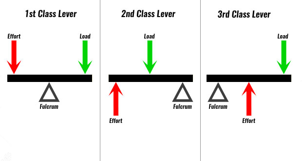
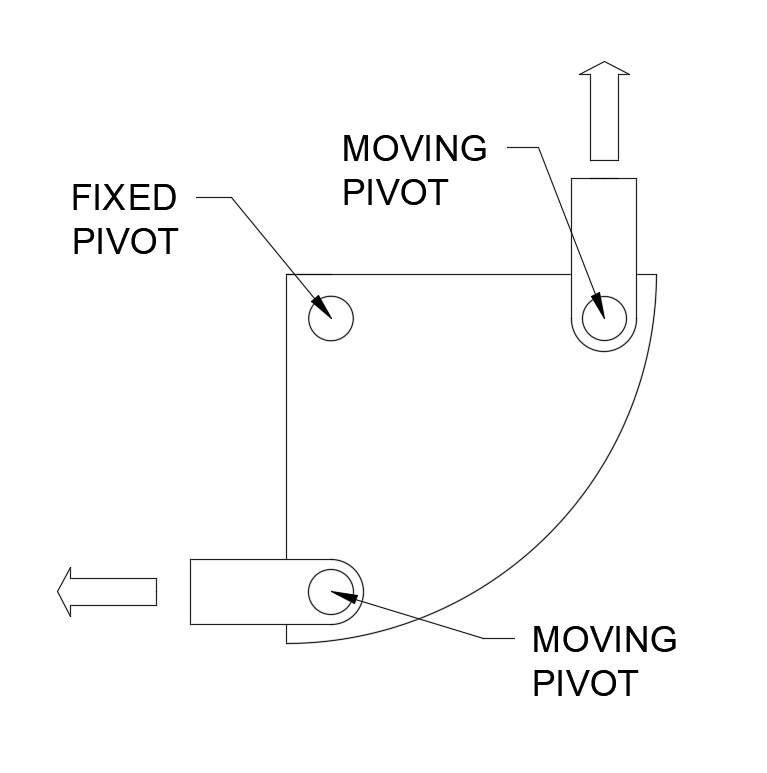

Changing magnitude and direction of force
Levers:
Levers are simple machines that provide mechanical advantage

| Application | Real-World Examples |
|---|---|
|
|
First Order Levers:
Levers with the fulcrum between the effort and load.
Examples: See-saws, scissors, crowbars, pliers
Second Order Levers:
Levers with the load between the fulcrum and effort.
Examples: Wheelbarrows, nutcrackers, bottle openers
Third Order Levers:
Levers with the effort between the fulcrum and load.
Examples: Tweezers, fishing rods, shovels, human arm
Bell Cranks:
Linkages that change the direction of motion through 90°.
Examples: Bicycle brakes, throttle linkages, car pedal systems
Push/Pull Linkages:
Linkages that transfer motion in a straight line.

Examples: Window winders, car gear shifts, parallel motion mechanisms
CAMs and Followers:
Systems that convert rotary motion to linear motion.

Examples: Engine valve trains, sewing machines, automated machinery
Simple Gear Trains:
Two or more meshing gears that transmit rotary motion.

Examples: Clock mechanisms, hand drills, gear pumps
Pulleys and Belts:
Systems that transfer rotary motion between shafts.